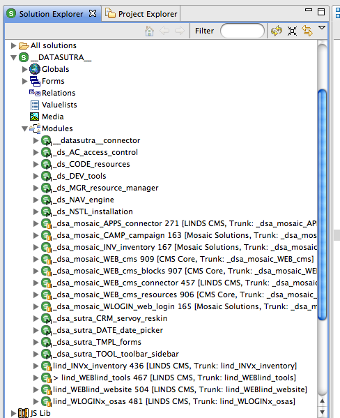
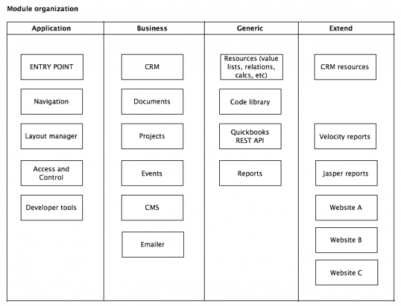
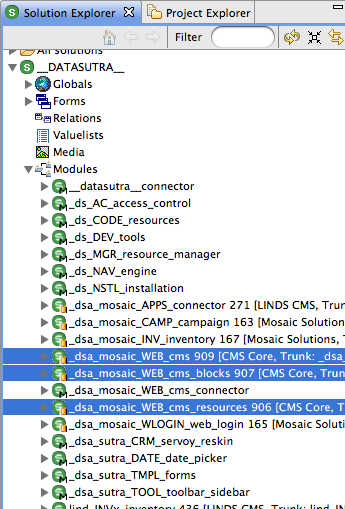
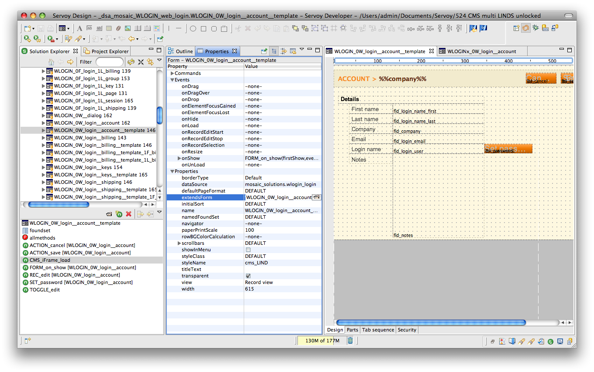
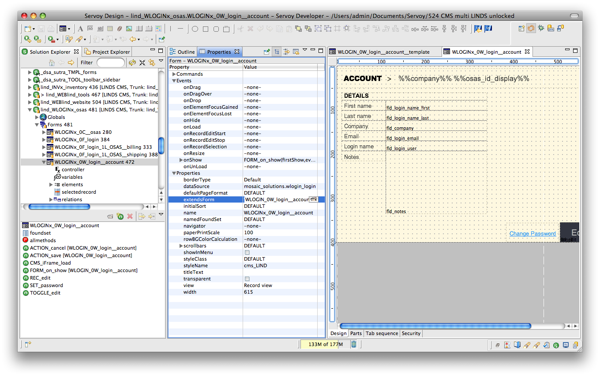
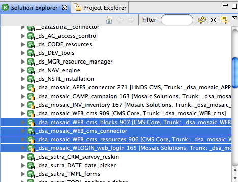
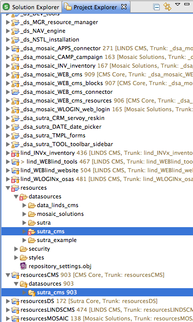
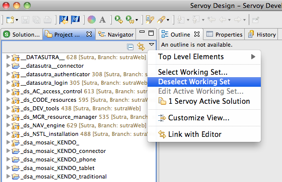

Modules
Servoy modules is the recommended way of encapsulating blocks of functionality. Combining modules allows you to build up entire applications from reusable components.
- Module concepts
- Extending core functionality
- SVN considerations
With a little forethought and planning you can also keep their ability to be maintained and upgraded intact even when used across many applications and client projects.
Concepts
Understanding how Servoy modules work is key to keeping functionality organized and reusable.
Chain of command
Combining modules is accomplished by including modules in other modules. “Parent” modules “see” everything from their “child” modules and can reference objects from included modules.
However, a child module does not see the parent module and cannot directly reference objects in the parent module. While a well designed module hierarchy should largely negate the need to reference objects out of visible scope, you can use “soft” references to get around scope limitations.
“Hard” reference:
`<code class="javascript">forms.WEB_0F_page</code>`
Equivalent “soft” reference:
`<code class="javascript">forms['WEB_0F_page']</code>`
Chain rules
Circular references are flagged as an error.
A circular reference is when a child module includes its parent module. Historically, circular references were allowed but Servoy 6 is quite a bit more strict about this.
A module can have multiple parent modules.
As long as you don’t create a circular reference, you can include a module in many other other modules. This is a handy way to share common resources (relations, value lists, calculations, helper methods, etc) with other modules.
Name spacing
Servoy requires that all objects and methods not associated with a form have a unique name. This includes:
- global methods and variables
- forms
- relations
- value lists
- media
- calculations
Form object and method names need only to be unique per form.
Modules DO NOT create a unique name space for their included objects and methods. This makes it very easy to have duplicate names in your solution after including a module.
This is a deficiency in how modules currently work and we’ve heard various rumblings over the years on plans to improve this aspect of modules.
Until then, you are responsible for making sure you don’t have unique names across modules.
Our approach is to use naming conventions to enforce uniqueness. Each of our module names includes several characters in CAPS that make up a unique identifier for that module. We use this identifier as a prefix to all names inside that module.
Note in this screen shot how the global methods and the form names have the module identifier as a prefix:

At some point, it seems that just about every language or development tool requires the programmer to resort to naming conventions to enforce organization. Modules is where Servoy requires us to use naming conventions to get around their lack of name space functionality.
An organized application
An application that comprises of frameworks modules, resource modules, business application modules, Sutra CMS modules, and various website specific modules—can easily reach 25+ modules.

The trick to making modules work for you is to keep the focus of each module very specific and not coding similar functionality in multiple modules. The following module breakdown is how we conceptualize modules:

The chain of included modules starts at the entry point module and generally goes down and to the right.
A module must belong to one task grouping (application, business, generic, extend) and provide unique functionality within that task group. For example, we wouldn’t create a module for document management and navigation functionality. On the other hand, we would add FTP functionality to a document management module if it were limited to a few methods but a full FTP client with a UI we would separate into its own module.
This approach to modules has worked very well for us over the years and provides the right amount of structure to keep us from duplicating too much functionality and allow us to easily combine reusable modules into larger solutions.
Extending Core Functionality
Perfect module organization only works if you have a plan for extending core functional modules to adapt to specific project and client requirements. Otherwise, inevitably you end up writing customizations directly into core functional modules which limits their reusability in the future.
Here are a number of approaches for extending modules:
- Addon modules
- Method override
- Extending forms
- Expose an API
- Solution model
Addon modules
An “addon” module is almost a stand-alone module in its own right in that it contains fully encapsulated functionality. This functionality though is considered an extension to the functionality of another module.
Set addon modules to be “children” to the core module.
An example of this approach in action is the Sutra CMS modules.
_dsa_mosaic_WEB_cms is the core functional Sutra CMS module and
_dsa_mosaic_WEB_cms_blocks is an addon module. It contains all the
code for the CMS blocks that ship with the core product.
Later on, we or anyone else could come up with addon modules for content workflows, website traffic analysis, products and shopping cart, etc.
The commonality of these addon module examples is that they all extend the functionality of the core CMS module with discrete functionality that is best contained in modules of their own.
An easily overlooked issue that arises from this approach is what happens when you need to access a global method or a relation or a value list in the core module? You can’t include the core module in your addon module as this would create a circular reference.
The trick is to not put resources that could potentially be used in addon modules in the core functional module. Instead, put these resources in their own “addon” module, include this in the core functional module, and include as you need in other addon modules.
Again from Sutra CMS, note the _dsa_mosaic_CMS_resources module. It
contains all the globals, value lists, relations, and calculations used
in Sutra CMS and it is included in both the core module and the blocks
addon module.

To build your own CMS addon module, just include the CMS resources module and start coding.
This approach is recommended for all major core functional modules that you build such as a CRM, project management, document management, etc. It gives you the flexibility to write core functionality in a main module and layer on sets of functionality with other modules over time.
See “SVN considerations” below if you have your code under SVN.
Method override
On the other side of the spectrum from addon module is the method override technique. It is a targeted one-shot way to override a default method.
This technique is simple in its direct approach. Run a method from anywhere in your solution if it exists or run a default method in this module if not:
//check for INVx method
if (globals.CODE_servoy_object_exists("IMAGE_import", "INVx_0C__file_stream")) {
forms.INVx_0C__file_stream.IMAGE_import(path,1)
}
//run default file streaming method
else {
forms.INV_0C__file_stream.IMAGE_import(path)
}
This is the code we use to check if a method exists:
function CODE_servoy_object_exists(methodName, formName) {
//a method passed in to check
if (methodName) {
//a form specified
if (formName) {
var smForm = solutionModel.getForm(formName)
//check to see if form exists
if (smForm) {
//check for method existence on given form
if (smForm.getFormMethod(methodName)) {
return true
}
else {
return false
}
}
else {
return false
}
}
//no form specified, at the global scope
else {
//check for global method existence
if (solutionModel.getGlobalMethod(methodName)) {
return true
}
else {
return false
}
}
}
else {
return false
}
}
This approach is easiest way to allow a small number of methods to be extended by a method somewhere else in your solution.
Extending forms
Somewhere in between the addon module and method override techniques is the extending forms technique. This approach allows you to customize user interfaces and override functionality on a form-by-form basis.
Basics
The key to this approach is Servoy’s cool feature that allows a form to extend another form (form inheritance. When you extend a form, your new form retains all the methods and design elements of the extended form. In addition to creating new methods and UI elements, you can override the original methods and UI element properties (but not delete inherited UI elements).
To extend the functionality of a core module, in another module (ie, custom client module), extend whatever forms you need and present those forms instead of the original forms to your user.
UI
Since extending forms doesn’t allow you to delete inherited UI elements—separating logic from UI in the original module adds additional UI flexibility down the line.
Typically you create a form and add methods and UI elements to it. To separate logic from UI, first create a form for just methods. Set the UI to contain no parts and a width of zero. Then create a new form that extends this form and create your UI on the new form.
In this screen shot note the WLOGIN_0W_login__account_template form
which contains the UI and extends the WLOGIN_0W_login__account form
which contains the methods:

To override the default UI, extend the “UI” form of the core module to start with both the original functionality and UI. This works best if you are reskinning the original UI or just adding new UI elements.
For ultimate UI flexibility, extend the “method” form of the core module to get a blank form with all original functionality as your starting point. To this you can copy UI elements from the original “UI” form to kick start your new UI work.
Here’s a screen shot of showing how we’ve “overridden” the UI of the previous screen shot using this technique:

Expose an API
You can expose business logic via [Servoy’s RESTful web services] plugin. Exposing functionality this way is essentially an API for 3rd party applications to use. API’s can also be called by other modules within your solution.
While an API is technically more of a way to interface with a core module’s functionality, calling an API method and then doing something more with the results can be considered a way of “extending” core functionality.
Solution model
All of the techniques listed so far are design-time approaches. With Servoy’s solution model, you can create anything you want at run-time.
This approach gives you the most flexibility but writing UI’s entirely in code also disconnects you from the visual design process.
For this reason, meta data is often used to drive solution model code. One source of meta data is design-time forms and methods. Grabbing a design-time form, tweaking a bit, then writing back out to the user—is a quick and easy way to use solution model code painlessly and effectively.
Summary
There are a number of techniques for creating reusable modules and extending their functionality. If taken into consideration when designing your modules, they can greatly enhance module usefulness.
Multi-developer Considerations
The well known reason for putting your code under version control is enabling multiple developers to collaborate on code easier.
An additional key benefit: SVN combined with reusable modules allows you to share and modify core code across multiple client projects.
To make this last goal work smoothly there are two things you need to take into account: how to include modules and managing Servoy Developer resource projects.
Including modules
When you include a module in another module, this modifies a file in the parent module—not the child module. If the parent module is a core functional module that you are using across multiple client projects, each of those client projects will see that other client-specific change.
Servoy references child modules by name, not UUID (a rare instance where this happens instead of the other way around). We can utilitize this fact to come up with a solution.
For core functional modules that you expect to be reused and extended by multiple client projects, create a “connector” module whose only function is to allow modules to be added to the core module without all your of your developer environments noting this change via SVN.
To use, include this connector module into your core functional module and commit up to your SVN repository.
In another developer instance, check out the core and connector modules into your workspace. Then disconnect SVN sharing for the connector module while keeping sharing on for the core module.
Include any modules that you use for that client project to extend a core functional module in the connector module. Other developer environments will not see this file change as the connector module is disconnected from SVN across all the developer environments.
To use Sutra CMS as an example again, notice that the CMS currently comprises of four modules—one of which is a connector module:

This allows us to add client-specific website modules to the CMS connector module without triggering a file change in the CMS repository.

Managing resource projects
For each Servoy Developer workspace there is a special project called “resources” which is where Servoy stores information for database servers, styles, security, templates, and repository settings:

This resources project is stored in the workspace and by default applies to all of the modules in your active solution. While it is possible to change this resources project on a module-by-module basis this doesn’t work when you have a solution with core functional modules coming from different SVN repositories—each with their own resources.
The solution is to create an eclipse project for each core functional module to store its unique resources. Put this project under SVN control. Then combine all of these eclipse “resource” projects for the various core functional modules you are using in a solution into your local default resources project.
This process requires a bit of hands-on management which is best done in the Eclipse project explorer view:

Note the shared eclipse resource projects specific to various reusable modules and the unshared Servoy resources project.
Following an update, copy changed files from the shared eclipse resource projects into the unshared Servoy resource project. While coding, if you change a resource of a core functional module (ie, add a column to a CMS table), manually copy the changed file from the unshared Servoy resource project to the correct shared module’s eclipse resource project and then commit.
This commit will then show for all other shared developer environments. They will then need to go through the update and copy to the unshared Servoy resource projects steps.
Now this may sound like a handful and it is the first few times you set it up, but with practice it comes naturally and allows you to reuse and share modules and their associated resources across many client projects.

(Note: if you don’t see some of your specific resource project folders, “Deselect Working Set” is available in the menu triggered by the small downward-pointing triangle button.)
Summary
Servoy’s module feature allows for many creative options when architecting large applications. Not only do they help you keep your code organized, with a little forethought and planning you can write reusable modules that can be used in many applications and projects—while keeping their ability to be maintained and upgraded intact.